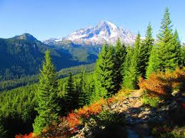
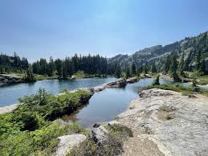
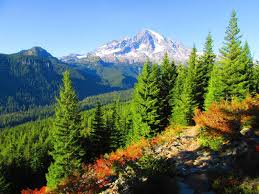
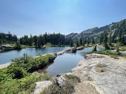
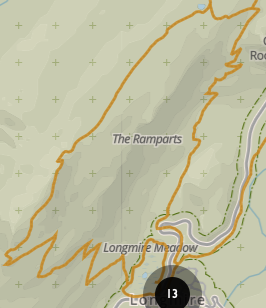

Rampart Ridge

The rules and regulations for the Rampart Ridge Trail in Mount Rainier National Park include:
No pets: Dogs and other pets are not allowed on the trail.
No fires: Fires are prohibited.
Winter conditions: Snow can make the trail hazardous in winter, so winter hikers and snowshoers should have experience with navigation.
Camping: Permits are required for camping.
Water: Treat water before drinking.
Trail conditions: Check current conditions with a ranger before heading out on a hike.
Park fees: There is a fee to enter the park, which varies depending on the vehicle used.
Seasonal road closures: Roads leading to the trailhead may be closed seasonally during the winter months.
Leave No Trace: Leave rocks, vegetation, and artifacts where you find them for others to enjoy.